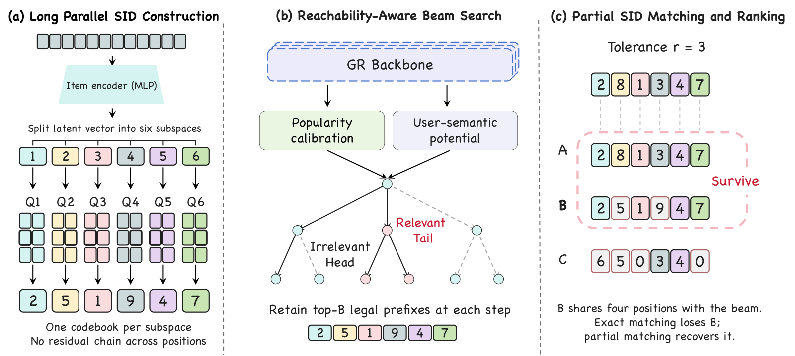
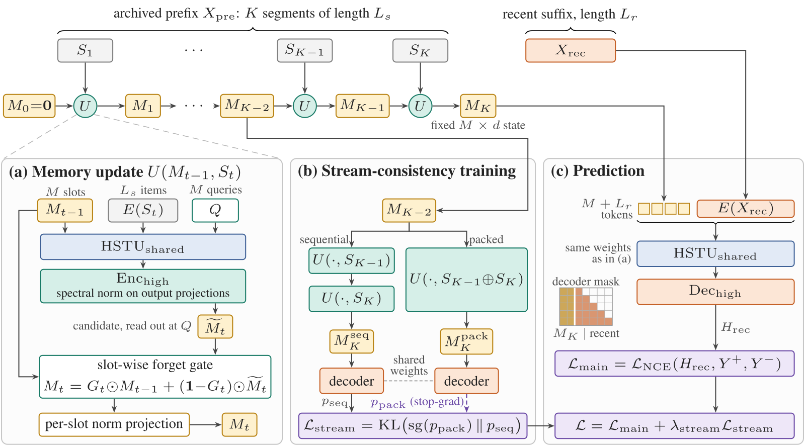

目录 · 9 节
1长尾商品丢在哪一步2编号怎么编：逐层和并行3差几位也能算数4beam 里先留住长尾前缀5走一遍：长尾商品 B 怎么被找回来6实验结果7线上效果和速度8这对做生成式召回的人意味着什么9局限冷门商品模型明明学过，为什么还是召回不出来？ReSID 给长尾商品在 beam 里留位置假设一个用户的下一次点击，是一款几乎没人买过的办公小商品。生成式召回模型读完他的历史，一位一位地写出商品编号，最后拿着写出的编号去商品库里找。只要编号有一位写错，这件商品就找不回来。
阿里巴巴国际数字商业集团和南开大学的作者在 Amazon Industrial 数据上量过这件事。目标是热门商品时，41.32% 的请求能在生成结果里找到完全一致的编号；目标是长尾商品时，只有 9.75%。
生成式召回先把每个商品编成一串离散 token，叫 Semantic ID（SID），再让模型根据用户历史逐位生成 SID，用 beam search 每一步只留分数最高的几条前缀，最后只取回编号完全一致的商品。现有的长尾方法大多改训练侧：CRAB（把过热的码拆开）、Ghost（让长尾商品继承热门前缀，再接更长的后缀）、SA2CRQ（给长尾商品自适应码长），推理时仍是标准 beam search 加精确匹配。ReSID 把检查范围放到整条召回链路上：编码换成长的并行 SID，beam search 里压低热门前缀、加入用户兴趣打分，匹配时允许最多 3 位不同。它在两个公开数据集上只用宽度 20 的 beam（基线用 200），长尾 Recall 和 NDCG 都是最好，整体指标接近最强基线；线上替换 TIGER 式生成召回后，广告收入提升 1.3%。
长尾商品召回不出来，很大一部分发生在推理阶段：beam search 早早剪掉了它的前缀，精确匹配又扔掉了差几位的序列。这些结论来自 3 千多件商品的公开数据和一个广告平台，没有在更多业务上验证。
长尾商品丢在哪一步
先看 beam search 什么时候把目标丢掉。作者在 Industrial 上用 6 位、每位 16 个码的 SID，beam 宽度 20，逐步检查目标商品的前缀还在不在 beam 里。

只生成了两个 token，62.5% 的长尾目标前缀就已经不在 beam 里。到第 6 步，长尾目标的丢失率是 90.2%，热门是 58.7%。热门商品在训练数据里出现得多，模型给它们的前缀分数高，窄 beam 很快被这些前缀占满。
扩大 beam 能缓解，但每一次请求的成本都会跟着涨。论文的问题是：beam 不变宽，能不能让长尾商品多活下来几个。
作者沿着召回链路查了三个环节：编号怎么编，生成的序列怎么匹配商品，beam search 怎么剪枝。三个环节各有一个发现，ReSID 的三个部件正好一一对应。
编号怎么编：逐层和并行
主流的 SID 是逐层残差编码（TIGER、OneRec 都属于这一类）。第一位码描述商品向量的大致位置，第二位码去量化第一位没描述完的残差，后面每一位都依赖前面几位。
并行 SID 换了个做法。商品的文本 embedding 先过一个 MLP，得到一条向量，再把这条向量均分成 6 段。每段有自己的码本，各自挑离自己最近的码字。这样第 3 位码只描述第 3 段向量，不受第 1、2 位选了什么的影响。
作者把两种编码放在同样大的码空间里比，短码（3 位、每位 256 个码）和长码（6 位、每位 16 个码）两种配置都试了。
结果是并行编码在所有长尾指标上都更好，说明码空间一样大时，编法本身会影响长尾：短码下长尾 Recall@200 从 8.62% 升到 13.02%，长码下长尾的有效覆盖率从 4.70% 升到 9.16%。有效覆盖率指至少被正确召回一次的不同目标商品占比。
作者给的解释是，逐层编码里热门商品本来就占据了早期的码，这种偏向会顺着残差一层层传下去。并行编码里一位码出了偏差，只影响自己那一位。 Hoot 说
示意：把商品向量压成一维，SID 只看前两位。一件长尾商品的值是 0.9。
热门把第 1 位码字拉偏 → 逐层编码的残差跟着偏 → 第 2 位换码；并行编码的第 2 位没有这条线
- 热门商品 → 第 1 位码字码本训练时热门商品多，离这件长尾商品最近的第 1 位码字，从理想的 0.6 被拉到 0.8，往热门方向偏了 0.2。0.8 − 0.6 = 0.2
- 第 1 位码字 → 逐层编码的残差逐层编码的第 2 位量化的是第 1 位没描述完的残差，所以第 1 位的码字偏了，残差也跟着偏。理想残差 0.9 − 0.6 = 0.3；实际残差 0.9 − 0.8 = 0.1
- 残差 → 第 2 位选码第 2 位码本有 0 和 0.3 两个码字。理想残差 0.3 选 0.3；实际残差 0.1 离 0 更近，第 2 位换成了 0，尽管第 2 位的码本本身没有偏向。码字 0.3 原来领先 0.09；残差偏移让领先量变化 2 × (−0.2) × 0.3 = −0.12，领先变成落后
- 第 1 位码字 ✕ 并行编码的第 2 位并行编码先把向量切段，第 2 位只量化自己那一段。设这一段的值也是 0.3，第 1 位怎么偏，它都选 0.3。两种编码对比：逐层坏了 2 位，并行只坏第 1 位
- 坏了几位 → 部分匹配接不接得住6 位的逐层编码里，这种偏移每往后一位都会再叠一次，附录 D 证明累计偏向至少随位数线性增长。并行编码一位出错只坏一位，「最多差 3 位」的匹配才接得住。

出处
论文附录 D：定义 D.1（残差轨迹）、命题 D.3（逐层累积）、引理 D.4（换码条件）、命题 D.5（并行隔离）；把商品向量压成一维、码字和商品的取值都是示意数字差几位也能算数
并行编码带来第二个好处：生成的序列即使不完全对，没写错的那几位仍然指向正确的商品特征。
还是 Industrial、beam 20、长码 6×16。要求完全一致时，长尾目标的可达率是 9.75%。允许 1 到 3 位不同，长尾可达率升到 41.56%，说明很多「没写对」的序列其实离目标只差几位。错过的长尾目标里，超过三分之一和某条生成序列至少有一半 token 相同。
于是作者把匹配规则放宽：商品的 SID 只要和某条生成序列最多差 3 位，就召回它。同一批 beam，长尾 Recall@200 从 9.75% 升到 20.39%，长尾有效覆盖率从 9.16% 升到 22.45%。
那么放宽匹配能不能救回所有长尾商品？不能。允许 3 位不同后，仍有 58.4% 的长尾目标找不回来，再放宽收益很小，还会混进无关商品。

图 4 下半部分查的就是这件事：beam 里还剩不剩一条前缀，补完以后能落在目标 3 位以内。到第 4 步，热门目标里有 65.2% 还保有这样的前缀，长尾目标已经有 50.4% 一条都没有了。只要匹配规则仍是最多差 3 位，这些商品在匹配阶段就救不回来，beam search 本身得改。
beam 里先留住长尾前缀
ReSID 冻结推荐模型，在 beam search 打分时加两个信号，其中只有用户语义分需要额外训练一个线性层。
第一个是流行度校正。作者从训练数据里统计每个 token 在某个前缀之后出现的频率，记作先验 π。打分前，从模型 logits 里减去 λ × log π（论文取 λ = 0.5）。越常见的分支，log π 越接近 0，加回来的分越少；冷门分支 log π 很负，加回来的分越多。
只做这一步，beam 会塞进一堆冷门但和用户无关的前缀。所以第二个信号是用户语义分。一个线性层把编码器读完用户历史后的输出变成一条用户向量，训练时让它靠近目标商品的文本向量。解码时，一个前缀的语义分 Φ 是这个前缀下所有真实商品与用户向量相似度的平均（论文用的是 log-mean-exp）。
每扩展一个 token，新前缀的分数是：父前缀分数 + 校正后的对数概率 + β ×（新前缀的 Φ − 父前缀的 Φ），论文取 β = 0.4。最后一项奖励「多写这一位以后，候选商品更贴近这个用户」的分支。每一步仍然只留分数最高的 B 条合法前缀。

走一遍：长尾商品 B 怎么被找回来
下面用论文图 5(c) 里的编号。生成序列、商品 A、B、C 的编号来自论文；第 2、3 步里的分支 2-8-1-6 和打分数字是示意。
第一步，看目标。用户下一次点的是长尾商品 B，它的并行 SID 是 2-5-1-9-4-7，每一位是一段向量各自挑出的码。
第二步，第 4 步解码时 beam 满了，最后一个名额在同一个父前缀 2-8-1 的两个分支之间争。一个是 2-8-1-3，和 B 的前四位只差两位，所以补完以后仍可能落在 B 的 3 位以内。另一个是 2-8-1-6，一个热门但和用户无关的分支。两条前缀的父前缀分数和 softmax 的归一化项都一样，比较时可以抵消，只看这一位的分数。
模型原始的对数概率里热门分支领先：−0.5 对 −1.7，差 1.2。流行度校正看这一位 token 有多常见：热门分支的先验是 0.5，冷门分支是 0.05。因为加回的是 −0.5 × log π，热门分支只加 0.35，冷门分支加 1.5。分数变成 −0.15 对 −0.2，差距从 1.2 缩到 0.05，热门分支仍然略领先。
第三步，用户语义分决定胜负。2-8-1-3 下的商品比 2-8-1 下的整体更贴近这个用户，Φ 增加 0.5；2-8-1-6 下的商品离用户更远，Φ 减少 0.5。乘上 β = 0.4，一边加 0.2，一边减 0.2，所以最终是 0 对 −0.35，2-8-1-3 留在 beam 里。只做流行度校正，这个名额还是热门分支的。
第四步，解码到第 6 位，这条前缀补成了 2-8-1-3-4-7。精确匹配只会取回编号完全相同的商品 A，B 被扔掉。
第五步，部分匹配逐个商品数不同的位数。A 是 2-8-1-3-4-7，差 0 位。B 是 2-5-1-9-4-7，第 2 位和第 4 位不同，差 2 位。C 是 6-5-0-3-4-0，差 4 位，超过 3 位的上限，不召回。排序时差得少的在前，所以 A 第一，B 第二；差的位数相同时，按匹配到的那条生成序列的分数排。
这一遍里，第 2、3 步决定 B 的「邻居」能不能活到最后，第 5 步从这个邻居找回 B。论文的分析也是这样分工的：在标准 beam search 下 3 位以内不可达、被 ReSID 找回来的长尾目标，Industrial 上 10 个里有 9 个最后靠部分匹配命中。
实验结果
论文在 Amazon 的 Industrial（3,686 件商品）、Office（3,459 件）和一个电商广告平台的 In-house 数据（约 417 万件）上比较。公开集里训练目标只出现 1 到 6 次的算长尾。它们占目录一半以上，却只拿到 20–22% 的训练交互，所以模型天然偏向热门商品。基线包括 RQ-VAE、TIGER、OneRec 三种常见 SID 方法，以及 CRAB、Ghost、SA2CRQ 三种长尾方法，全部用同一个轻量 encoder–decoder 骨干。
ReSID 在三个数据集的所有长尾指标上都是最好。和最强的长尾基线 Ghost 比，两个公开集上长尾 Recall 平均高 41.2%，NDCG 平均高 36.6%。In-house 上长尾 Recall@200 从 18.94 升到 36.62。
整体指标是另一回事。公开集上 ReSID 的整体 R@50 排第二，各项与最好的方法平均差 6.7%（Recall）和 6.2%（NDCG）。比如 Industrial 上 OneRec 的整体 R@200 是 36.66，ReSID 是 33.77；长尾 R@200 则是 14.68 对 21.22。这说明在小目录上，ReSID 用一点整体精度换来了明显的长尾提升；In-house 上它的整体 R@200 也领先，从 37.65 升到 48.28。
消融在 Office 上做，每次从完整模型里拿掉一个部件：
| 版本 | 长尾 R@200 | 相对变化 | 长尾曝光覆盖 |
|---|---|---|---|
| ReSID 完整版 | 20.54 | – | 99.31 |
| 去掉流行度校正 | 18.76 | −8.7% | 97.81 |
| 去掉用户语义分 | 19.26 | −6.2% | 99.63 |
| 去掉部分匹配 | 6.97 | −66.1% | 63.73 |
| 换成逐层 SID | 16.99 | −17.3% | 99.79 |
（数字来自论文表 2）
表里的曝光覆盖指出现在任何一份召回列表里的商品占目录的比例。部分匹配贡献最大，去掉后长尾 R@200 少了三分之二。两个 beam 信号各贡献几个百分点，换回逐层编码也掉了 17.3%。前三个变体复用完整模型的权重，只是把 λ 或 β 设成 0、或改回精确匹配，测的是推理时拿掉一个部件的效果。逐层 SID 那一行不同，它用的是在逐层 SID 上训练的模型。
用户语义分是不是只在增加随机性？作者把每个用户的向量换成别人的，长尾曝光覆盖都在 99% 左右，但真实用户向量的长尾 R@200 更高：Industrial 20.63 对 21.22，Office 18.41 对 20.54。这说明它留下的长尾前缀确实更对这个用户的胃口，只是幅度不大。
线上效果和速度
所有方法都返回 200 个不重复商品时，基线的端到端延迟是 ReSID 的 2.0 到 8.2 倍，吞吐只有它的 0.06 到 0.27 倍，Ghost 最慢，因为它给长尾商品用了更长的 SID。
这里 ReSID 用的 beam 是 20，基线是 200，速度优势主要来自更窄的 beam；流行度校正和部分匹配都不加模型参数，用户语义只加一个线性层。
线上 A/B 在一个大型电商广告平台做，2026 年 7 月 1 日到 12 日，实验组和对照组各 15% 流量。对照组是 TIGER 式生成召回，实验组换成 ReSID，其他召回通道和下游排序不变。
结果是广告收入提升 1.3%，CTR 提升 1.1%，GMV 提升 0.8%，长尾曝光占比提升 4.0%，说明多召回的长尾商品在排序后也拿到了曝光。线上平均响应 10.3 ms，7 月起全量。
线上实现有两处工程替代。语义分用离线算好的前缀中心向量和用户向量做点积来近似；部分匹配用「位置 + token」的倒排表累计每个商品命中了几位，再按不同的位数过滤和排序。
这对做生成式召回的人意味着什么
长尾召回差时，先查推理链路：目标前缀在第几步掉出 beam，掉出去的时候 beam 里还有没有离它只差几位的序列。
这两个数都能离线算出来，不用改模型。如果大量长尾目标在最后都只差一两位，可以先试部分匹配，它不加模型参数，论文线上用位置到 token 的倒排表实现。如果目标的邻居在前几步就全没了，就得动 beam search 的打分，流行度校正只要一张前缀到 token 的频次表。
并行 SID 是一个需要重新编码、重训模型的改动。它让每一位码各管一段向量，部分匹配才有意义。我的理解是，逐层编码下前面一位错了，后面几位的含义也跟着变，差几位的序列未必还指向相近的商品。
局限
两个公开数据集都只有三千多件商品，99% 的长尾曝光覆盖是在这个目录规模上得到的。整体指标上，ReSID 在公开集没有赢过最强的常见 SID 方法。
速度对比里 ReSID 的 beam 比基线窄 10 倍，论文没有给同样 beam 宽度下的延迟比较。
线上对照组只有 TIGER 式生成召回，没有和 CRAB、Ghost 这些长尾方法做线上对比。In-house 的长尾按点击累计 80% 划分，和公开集的划分规则不同。
读完这篇，你觉得
夜读鸮记下了，谢谢你的反馈。
点一下即可，无需登录；再点一次撤回。只统计匿名次数，不记录你是谁。
相关论文RELATED
 Personalization · 2026-10-23Generative Recommenders Forget the Long Tail: Restoring Memorization in Retrieval and Ranking生成式推荐用 beam search 逐个生成物品 ID 的 token，冷门物品生成概率低，往往前一两步就被剪掉：Amazon 工业科学品类上，MiniOneRec 生成的 50 个候选只覆盖 11.94% 的冷门目标。CAPE 不重训模型，推理时从训练数据里统计哪些物品和用户历史被同一批用户交互过，按这个共现计数额外召回 25 个冷门候选，并把计数加进排序分。LastFM 上 TIGER 前 10 命中冷门目标的比例从 3.94% 升到 17.19%，每次请求耗时多 11–16%。
Personalization · 2026-10-23Generative Recommenders Forget the Long Tail: Restoring Memorization in Retrieval and Ranking生成式推荐用 beam search 逐个生成物品 ID 的 token，冷门物品生成概率低，往往前一两步就被剪掉：Amazon 工业科学品类上，MiniOneRec 生成的 50 个候选只覆盖 11.94% 的冷门目标。CAPE 不重训模型，推理时从训练数据里统计哪些物品和用户历史被同一批用户交互过，按这个共现计数额外召回 25 个冷门候选，并把计数加进排序分。LastFM 上 TIGER 前 10 命中冷门目标的比例从 3.94% 升到 17.19%，每次请求耗时多 11–16%。
Generative · 2026-11-17RecMem: Recurrent Memory Compression for Long-Sequence Generative Recommendation生成式推荐一旦把用户很长的历史直接送进模型，计算量和显存就会跟着历史长度一起涨，很长的交互序列很快变得又慢又贵。作者把历史一段一段压进数量固定的记忆槽，解码时只用固定长度的上下文，不再随历史变长而膨胀。在来自电商平台的长序列基准上，解码上下文从 1200 个 token 减到 216 个，仍保住了直接处理同样长历史的对照模型 87.9% 的 Recall@10，更靠后的召回也几乎相当。同一个训练好的模型在很长的后续交互里，推荐质量没有塌掉。远期行为里的信号，不必整段塞进解码器也能留下来。对要上线长序列生成式推荐的人来说，这给出了一条用固定容量记忆换上下文的路，而不是把整段历史都留在注意力窗口里。 Generative · 2026-11-02PFA: Attention Can Be Progressively Focused in Long-Sequence Generative Recommendation阿里的作者发现，生成式推荐做 beam 解码时，越往后注意力越集中在少数几条历史行为上，而且哪些行为重要，前后几步基本不变。据此提出的 PFA 把挑选重要历史这件事，从每步、每条 beam 各挑一次，改成整个解码只挑一次。它在解码第一步照常看完整历史；到第二步，把各条 beam 对历史的注意力按生成概率加权汇总，排出一份共用的重要行为排名，后面每步保留的行为数按固定比例缩小。在电商广告平台的线上 A/B 中，用户历史从 128 条加长到 512 条，收入提升 3.76%。响应时间仍比直接读完整历史更短。
Generative · 2026-11-02PFA: Attention Can Be Progressively Focused in Long-Sequence Generative Recommendation阿里的作者发现，生成式推荐做 beam 解码时，越往后注意力越集中在少数几条历史行为上，而且哪些行为重要，前后几步基本不变。据此提出的 PFA 把挑选重要历史这件事，从每步、每条 beam 各挑一次，改成整个解码只挑一次。它在解码第一步照常看完整历史；到第二步，把各条 beam 对历史的注意力按生成概率加权汇总，排出一份共用的重要行为排名，后面每步保留的行为数按固定比例缩小。在电商广告平台的线上 A/B 中，用户历史从 128 条加长到 512 条，收入提升 3.76%。响应时间仍比直接读完整历史更短。 Generative · 2026-10-28SLIDE: Search-to-List Item Distillation for Single-Rollout Generative Retrieval生成式召回线上通常用束搜索出候选，各条束互不可见；想让模型一口气写出整张列表，最直接的贪心解码效果却差得多。淘宝的 SLIDE（一种把离线搜索结果蒸馏成列表的训练方法）把搜索挪到离线：教师对每个训练请求跑束搜索，把搜出的商品按得分拼成一条长序列，学生照着学，线上只贪心解码一遍。它把线上的搜索成本换成了离线的标注成本。教师用 7B 时，0.5B 学生的 HR@10 达到 0.4578，反超同尺寸模型束搜索的 0.4498。
Generative · 2026-10-28SLIDE: Search-to-List Item Distillation for Single-Rollout Generative Retrieval生成式召回线上通常用束搜索出候选，各条束互不可见；想让模型一口气写出整张列表，最直接的贪心解码效果却差得多。淘宝的 SLIDE（一种把离线搜索结果蒸馏成列表的训练方法）把搜索挪到离线：教师对每个训练请求跑束搜索，把搜出的商品按得分拼成一条长序列，学生照着学，线上只贪心解码一遍。它把线上的搜索成本换成了离线的标注成本。教师用 7B 时，0.5B 学生的 HR@10 达到 0.4578，反超同尺寸模型束搜索的 0.4498。 Generative · 2026-11-11TS-GEAR: Taobao Shangou GEnerative Ad Retrieval外卖搜索里，送不到用户当前位置的商家不是排得低，而是根本不能出现。常见的 SID 只由内容和协同信号生成，最多把位置当软信号，于是送不到的商家要等生成完才被过滤，白白占掉 beam，这一步也进不了端到端训练。淘宝闪购的 TS-GEAR 把位置写进商家 ID：前三个 token 来自地理网格编码，后三个才是内容语义，解码时前两个 token 直接限定在用户所在格子和周围八格。在线上用的检索半径下，它前 50 个候选有 95.8% 送得到，最强基线 OneLoc 只有三成多。事后过滤也能删掉不合格的商家，但留下的顺序没学过位置。线上 A/B 实验里广告收入提升 4.2%。做本地生活检索的人可以把这类硬约束直接写进 ID 结构，让模型学的是可达范围内怎么排序。
Generative · 2026-11-11TS-GEAR: Taobao Shangou GEnerative Ad Retrieval外卖搜索里，送不到用户当前位置的商家不是排得低，而是根本不能出现。常见的 SID 只由内容和协同信号生成，最多把位置当软信号，于是送不到的商家要等生成完才被过滤，白白占掉 beam，这一步也进不了端到端训练。淘宝闪购的 TS-GEAR 把位置写进商家 ID：前三个 token 来自地理网格编码，后三个才是内容语义，解码时前两个 token 直接限定在用户所在格子和周围八格。在线上用的检索半径下，它前 50 个候选有 95.8% 送得到，最强基线 OneLoc 只有三成多。事后过滤也能删掉不合格的商家，但留下的顺序没学过位置。线上 A/B 实验里广告收入提升 4.2%。做本地生活检索的人可以把这类硬约束直接写进 ID 结构，让模型学的是可达范围内怎么排序。 Generative · 2026-11-05ReuseGR: Offline--Online Decoupled Generative Retrieval via Adaptive Prefix Reuse做生成式检索上线的团队值得读：它给出了一种拆法，大模型的算力按搜索词复用，个性化留给在线小模型，并且有线上 A/B 验证。同一个搜索词每天被很多人搜，每次都从头生成完整的 Semantic ID 是在重复计算。ReuseGR 把活拆成两半：离线用大模型给每个搜索词先生成一批 SID 前缀，同词的请求共用；在线用小模型按当前用户的历史挑前缀，再补全剩下的 token。在一个搜索广告数据集上，假设前缀已提前缓存好，它的召回和全程在线跑大模型持平，在线延迟却低 57.7%；线上 A/B 里，点击率比原来的小模型方案相对提高 0.93%。
Generative · 2026-11-05ReuseGR: Offline--Online Decoupled Generative Retrieval via Adaptive Prefix Reuse做生成式检索上线的团队值得读：它给出了一种拆法，大模型的算力按搜索词复用，个性化留给在线小模型，并且有线上 A/B 验证。同一个搜索词每天被很多人搜，每次都从头生成完整的 Semantic ID 是在重复计算。ReuseGR 把活拆成两半：离线用大模型给每个搜索词先生成一批 SID 前缀，同词的请求共用；在线用小模型按当前用户的历史挑前缀，再补全剩下的 token。在一个搜索广告数据集上，假设前缀已提前缓存好，它的召回和全程在线跑大模型持平，在线延迟却低 57.7%；线上 A/B 里，点击率比原来的小模型方案相对提高 0.93%。 Generative · 2026-10-29PailitaoMMSearch2.0 Technical Report: Scaling Generative Retrieval to Unified End-to-End Multimodal Search淘宝拍立淘里，用户拍一件衬衫再说「找条配它的短裤」，要的是搭配而不是同款。传统做法先分意图、再分发到不同召回通道，任何一步分错后面全错。阿里这篇技术报告让一个 2B 视觉语言模型直接读原图和原话，生成商品的 Semantic ID，不需要意图标签。优秀率指前 10 个结果里被评审模型判满分的比例。「找搭配」请求的这一指标从多路召回链路的 44.2% 提到 74.3%，线上 GMV 提升 8.94%，已全量上线。
Generative · 2026-10-29PailitaoMMSearch2.0 Technical Report: Scaling Generative Retrieval to Unified End-to-End Multimodal Search淘宝拍立淘里，用户拍一件衬衫再说「找条配它的短裤」，要的是搭配而不是同款。传统做法先分意图、再分发到不同召回通道，任何一步分错后面全错。阿里这篇技术报告让一个 2B 视觉语言模型直接读原图和原话，生成商品的 Semantic ID，不需要意图标签。优秀率指前 10 个结果里被评审模型判满分的比例。「找搭配」请求的这一指标从多路召回链路的 44.2% 提到 74.3%，线上 GMV 提升 8.94%，已全量上线。 Generative · 2026-07-23TSGR: Taobao Search Generative Retrieval淘宝搜索的 TSGR 在 SID 第 3 层按点击给商品排座次，并按 query 准备多套排序，让卖得好又贴合 query 的商品更容易被生成，同一模型再接打分模块做重排。离线 HR@1000 从 0.7735 提到 0.8651，线上 GMV +1.64%；但重排抬高了前 1000 命中、压低了前 20 命中。
Generative · 2026-07-23TSGR: Taobao Search Generative Retrieval淘宝搜索的 TSGR 在 SID 第 3 层按点击给商品排座次，并按 query 准备多套排序，让卖得好又贴合 query 的商品更容易被生成，同一模型再接打分模块做重排。离线 HR@1000 从 0.7735 提到 0.8651，线上 GMV +1.64%；但重排抬高了前 1000 命中、压低了前 20 命中。
讨论
欢迎补充实验细节、复现经验或不同看法。需 GitHub 登录。
正在加载讨论…